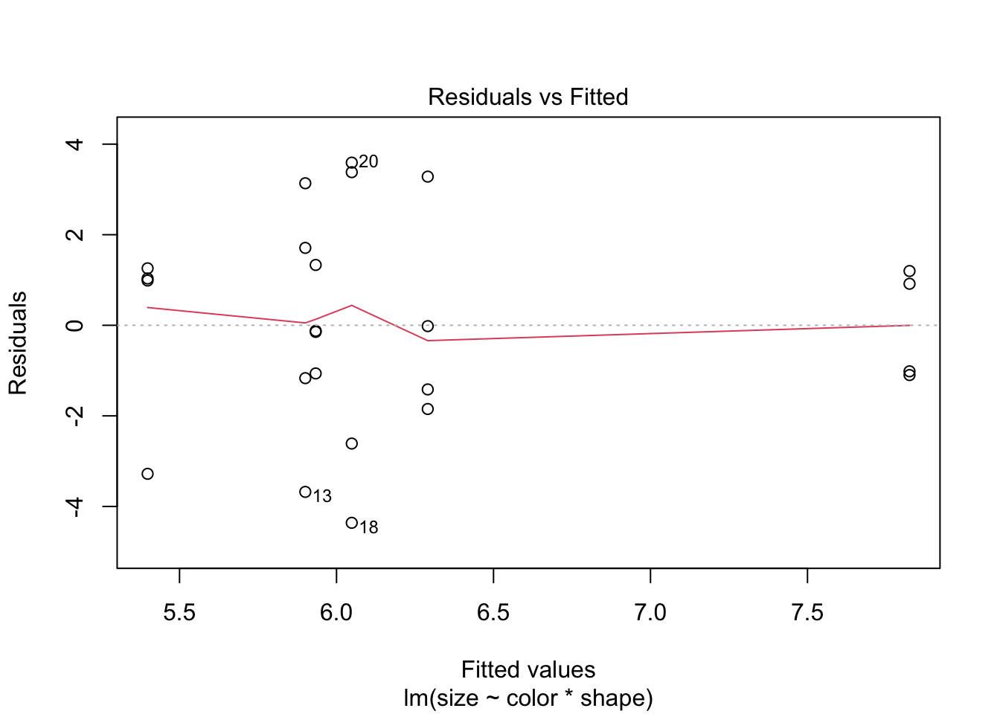

library(tidyverse)
library(emmeans)
library(car)
library(broom)
library(knitr)Explanation of How to Do An ANOVA
set.seed(42)
balloon.data <- data.frame(
color = rep(c("blue", "green", "red"), each = 8),
shape = rep(c("circle", "square"), 12),
size = c(rnorm(8, mean = 6, sd = 2),
rnorm(8, mean = 5, sd = 2),
rnorm(8, mean = 7, sd = 2))
) |>
mutate(
color = factor(color, levels = c("blue", "green", "red")),
shape = factor(shape, levels = c("circle", "square"))
)Setting factor levels explicitly (here blue and circle are the reference categories) ensures that contrasts have the direction you expect when interpreting results. The design is balanced — 8 observations per color — which simplifies the sums-of-squares decomposition (see the Two-Way ANOVA section).
Check Distribution of Your Data
Before fitting models, screen for gross departures from normality using Shapiro-Wilk tests and check the assumption of equal variance with Levene’s test.
Important caveat on power: with small group sizes (n = 6–8), these pre-screening tests have very low statistical power — a non-significant result does not guarantee normality or equal variance. The more reliable check is a Shapiro-Wilk test on the model residuals after fitting, which pools information across all groups and is what ANOVA actually assumes. See the Assumptions section for that test. The cell-by-cell checks here are only a rough initial screen.
balloon.data |>
group_by(shape) |>
summarise(
W = shapiro.test(size)$statistic,
p.value = shapiro.test(size)$p.value,
.groups = "drop"
) |>
kable(digits = 3, caption = "Shapiro-Wilk test by shape")| shape | W | p.value |
|---|---|---|
| circle | 0.874 | 0.073 |
| square | 0.937 | 0.461 |
balloon.data |>
group_by(color, shape) |>
summarise(
W = shapiro.test(size)$statistic,
p.value = shapiro.test(size)$p.value,
.groups = "drop"
) |>
kable(digits = 3, caption = "Shapiro-Wilk test by color and shape")| color | shape | W | p.value |
|---|---|---|---|
| blue | circle | 0.799 | 0.101 |
| blue | square | 0.926 | 0.569 |
| green | circle | 0.964 | 0.802 |
| green | square | 0.872 | 0.307 |
| red | circle | 0.679 | 0.007 |
| red | square | 0.832 | 0.174 |
leveneTest(size ~ color * shape, data = balloon.data) |>
tidy() |>
kable(digits = 3, caption = "Levene's test for homogeneity of variance")| statistic | p.value | df | df.residual |
|---|---|---|---|
| 2.794 | 0.049 | 5 | 18 |
If the data are non-normal or variances are unequal, consider transforming the dependent variable (e.g. log(size)) or using a non-parametric alternative (see the Assumptions section).
One-Way ANOVA
Use a one-way ANOVA when you have a single categorical predictor.
# Two-level factor — equivalent to a two-sample t-test with equal variances
aov(size ~ shape, data = balloon.data) |>
tidy() |>
kable(caption= "One-way ANOVA with two levels of shape")| term | df | sumsq | meansq | statistic | p.value |
|---|---|---|---|---|---|
| shape | 1 | 0.4829225 | 0.4829225 | 0.0822025 | 0.7770174 |
| Residuals | 22 | 129.2453851 | 5.8747902 | NA | NA |
t.test(size ~ shape, data = balloon.data, var.equal = TRUE) |>
tidy() |>
kable(digits = 3, caption = "Two-sample t-test (equal variances)")| estimate | estimate1 | estimate2 | statistic | p.value | parameter | conf.low | conf.high | method | alternative |
|---|---|---|---|---|---|---|---|---|---|
| 0.284 | 6.375 | 6.091 | 0.287 | 0.777 | 22 | -1.768 | 2.336 | Two Sample t-test | two.sided |
# Three-level factor
aov(size ~ color, data = balloon.data) |>
tidy() |>
kable(digits = 3, caption = "One-way ANOVA with three levels of color")| term | df | sumsq | meansq | statistic | p.value |
|---|---|---|---|---|---|
| color | 2 | 5.570 | 2.785 | 0.471 | 0.631 |
| Residuals | 21 | 124.158 | 5.912 | NA | NA |
Post-Hoc Comparisons for One-Way ANOVA
A significant omnibus F-test tells you that some groups differ, but not which ones. Use emmeans (Lenth 2016, 2024) to compute estimated marginal means and pairwise contrasts with automatic multiplicity adjustment.
balloon.lm.color <- lm(size ~ color, data = balloon.data)
# Estimated marginal means
emmeans(balloon.lm.color, ~ color) |>
as_tibble() |>
kable(digits = 2, caption = "Estimated marginal means by color")| color | emmean | SE | df | lower.CL | upper.CL |
|---|---|---|---|---|---|
| blue | 6.88 | 0.86 | 21 | 5.09 | 8.67 |
| green | 6.10 | 0.86 | 21 | 4.31 | 7.88 |
| red | 5.72 | 0.86 | 21 | 3.94 | 7.51 |
# All pairwise contrasts, Tukey-adjusted
emmeans(balloon.lm.color, ~ color) |>
pairs(adjust = "tukey") |>
as_tibble() |>
kable(digits = 3, caption = "Pairwise contrasts (Tukey-adjusted)")| contrast | estimate | SE | df | t.ratio | p.value |
|---|---|---|---|---|---|
| blue - green | 0.784 | 1.216 | 21 | 0.645 | 0.797 |
| blue - red | 1.156 | 1.216 | 21 | 0.951 | 0.615 |
| green - red | 0.372 | 1.216 | 21 | 0.306 | 0.950 |
emmeans works with any model object (lm, lmer, glm, etc.) and integrates cleanly into tidyverse pipelines, making it more flexible than the older TukeyHSD() or glht() approaches.
Two-Way ANOVA
Use a two-way ANOVA when two categorical predictors may jointly affect your outcome.
For a 2×2 Design, Always Fit the Full Interaction Model
balloon.lm <- lm(size ~ color * shape, data = balloon.data)
car::Anova(balloon.lm, type = "III") |>
tidy() |>
kable(digits = 3, caption = "Type III ANOVA table")| term | sumsq | df | statistic | p.value |
|---|---|---|---|---|
| (Intercept) | 244.919 | 1 | 38.052 | 0.000 |
| color | 13.125 | 2 | 1.020 | 0.381 |
| shape | 7.154 | 1 | 1.111 | 0.306 |
| color:shape | 7.820 | 2 | 0.608 | 0.556 |
| Residuals | 115.855 | 18 | NA | NA |
car::Anova() with type = "III" gives each term’s F-test conditioned on all other terms in the model. This is equivalent to anova() for balanced designs but gives the correct result for unbalanced designs (unequal group sizes), where the base-R anova() function uses sequential Type I sums of squares whose values depend on the order terms are written in the formula. Using Type III throughout is the safer habit.
The interaction p-value tests whether the effect of color depends on shape (and vice versa).
Why Not Drop the Interaction and Refit an Additive Model?
A common but problematic workflow is: if the interaction p ≥ 0.05, drop the term and refit size ~ color + shape. This should be avoided for three reasons (Mundry and Nunn 2009; Gelman 2005):
Pre-testing inflates Type I error. Conditioning the reported main-effect inference on the outcome of the interaction test miscalibrates standard errors and p-values in the second model. Type I error rates can drift to 7–10% even when the nominal level is 5%.
Failure to reject ≠ no interaction. Interaction tests require substantially larger samples than main-effect tests to detect effects of equivalent magnitude — the deficit grows with the number of factor levels. With small group sizes you will almost always fail to reject the interaction null, but that does not mean the interaction is absent.
The additive model assumes additivity. Fitting
size ~ color + shapewhen the true data-generating process includes an interaction underestimates uncertainty and can bias main-effect estimates.
The solution is to retain the interaction model and use emmeans to extract the quantities of interest — marginal main effects and, when warranted, simple effects — all from the same fit with one residual variance estimate.
When does this advice apply? For a designed experiment with a small number of primary factors (e.g. a 2×2 diet × treatment design), the interaction is scientifically plausible and pre-specified, so it should stay in the model regardless of its p-value. The argument is weaker when your model contains many covariates: with \(k\) predictors there are \(k(k-1)/2\) pairwise interactions, and including them all burns degrees of freedom, causes collinearity, and risks overfitting. For nuisance covariates included only to improve precision (e.g. body weight in an ANCOVA), their interaction with the primary factor is usually not of scientific interest and need not be fitted. The key principle is that interactions should be included because they are scientifically motivated, not because a pre-test happened to reject — and excluded for the same reason, not because a pre-test failed to reject.
Cell Means
Cell means are the model-predicted group averages at every combination of the two factors.
emmeans(balloon.lm, ~ color * shape) |>
as_tibble() |>
kable(digits = 2, caption = "Cell means (estimated marginal means)")| color | shape | emmean | SE | df | lower.CL | upper.CL |
|---|---|---|---|---|---|---|
| blue | circle | 7.82 | 1.27 | 18 | 5.16 | 10.49 |
| green | circle | 5.90 | 1.27 | 18 | 3.24 | 8.57 |
| red | circle | 5.40 | 1.27 | 18 | 2.73 | 8.06 |
| blue | square | 5.93 | 1.27 | 18 | 3.27 | 8.60 |
| green | square | 6.29 | 1.27 | 18 | 3.63 | 8.96 |
| red | square | 6.05 | 1.27 | 18 | 3.38 | 8.71 |
Marginal Main Effects
Marginal main effects answer: what is the average effect of color, averaging across all shapes? These should always be reported alongside the interaction test.
# Average effect of color (averaged over both shapes)
emmeans(balloon.lm, ~ color) |>
pairs(adjust = "tukey") |>
as_tibble() |>
kable(digits = 3, caption = "Marginal contrasts for color (Tukey-adjusted)")| contrast | estimate | SE | df | t.ratio | p.value |
|---|---|---|---|---|---|
| blue - green | 0.784 | 1.269 | 18 | 0.618 | 0.812 |
| blue - red | 1.156 | 1.269 | 18 | 0.911 | 0.640 |
| green - red | 0.372 | 1.269 | 18 | 0.293 | 0.954 |
# Average effect of shape (averaged over all colors)
emmeans(balloon.lm, ~ shape) |>
pairs(adjust = "tukey") |>
as_tibble() |>
kable(digits = 3, caption = "Marginal contrast for shape (Tukey-adjusted)")| contrast | estimate | SE | df | t.ratio | p.value |
|---|---|---|---|---|---|
| circle - square | 0.284 | 1.036 | 18 | 0.274 | 0.787 |
These contrasts come from the same interaction model — emmeans computes them by averaging the cell means over the levels of the other factor. They represent the average simple effect, without assuming the effect is constant across levels of the other factor.
Simple Effects
Simple effects answer: what is the effect of color within each level of shape separately? Report these when the interaction term is large or scientifically meaningful.
# Effect of color within each shape
emmeans(balloon.lm, ~ color | shape) |>
pairs(adjust = "tukey") |>
as_tibble() |>
kable(digits = 3, caption = "Simple effects: color within each shape (Tukey-adjusted)")| contrast | shape | estimate | SE | df | t.ratio | p.value |
|---|---|---|---|---|---|---|
| blue - green | circle | 1.924 | 1.794 | 18 | 1.073 | 0.542 |
| blue - red | circle | 2.427 | 1.794 | 18 | 1.353 | 0.386 |
| green - red | circle | 0.502 | 1.794 | 18 | 0.280 | 0.958 |
| blue - green | square | -0.357 | 1.794 | 18 | -0.199 | 0.978 |
| blue - red | square | -0.115 | 1.794 | 18 | -0.064 | 0.998 |
| green - red | square | 0.242 | 1.794 | 18 | 0.135 | 0.990 |
# Effect of shape within each color
emmeans(balloon.lm, ~ shape | color) |>
pairs(adjust = "tukey") |>
as_tibble() |>
kable(digits = 3, caption = "Simple effects: shape within each color (Tukey-adjusted)")| contrast | color | estimate | SE | df | t.ratio | p.value |
|---|---|---|---|---|---|---|
| circle - square | blue | 1.891 | 1.794 | 18 | 1.054 | 0.306 |
| circle - square | green | -0.390 | 1.794 | 18 | -0.217 | 0.830 |
| circle - square | red | -0.650 | 1.794 | 18 | -0.362 | 0.721 |
What to Report
| Quantity | Question answered | Code |
|---|---|---|
| Interaction F-test | Do effects combine non-additively? | car::Anova(fit, type = "III") |
| Cell EMMs | Predicted mean at each group combination | emmeans(fit, ~ color * shape) |
| Marginal main effects | Average effect of A across levels of B | emmeans(fit, ~ A) |> pairs() |
| Simple effects | Effect of A within each level of B | emmeans(fit, ~ A | B) |> pairs() |
Always report the interaction test and marginal main effects. If the interaction is large or scientifically meaningful, additionally report simple effects. Use the same model throughout — no refitting.
Multiple Testing Across Many Outcomes
If you test the same design across many outcomes (e.g. multiple genes or proteins), adjust p-values across outcomes using the Benjamini-Hochberg false discovery rate to control the proportion of false positives. The key is to collect all the contrasts you care about into a single table before adjusting, so the correction spans the full set of tests.
# Collect marginal contrasts for both factors into one table, then adjust together
color_contrasts <- emmeans(balloon.lm, ~ color) |>
pairs() |>
as_tibble() |>
mutate(factor = "color")
shape_contrasts <- emmeans(balloon.lm, ~ shape) |>
pairs() |>
as_tibble() |>
mutate(factor = "shape")
bind_rows(color_contrasts, shape_contrasts) |>
mutate(p.adj = p.adjust(p.value, method = "BH")) |>
select(factor, contrast, estimate, SE, df, t.ratio, p.value, p.adj) |>
kable(digits = 3, caption = "All marginal contrasts with BH-adjusted p-values")| factor | contrast | estimate | SE | df | t.ratio | p.value | p.adj |
|---|---|---|---|---|---|---|---|
| color | blue - green | 0.784 | 1.269 | 18 | 0.618 | 0.812 | 0.954 |
| color | blue - red | 1.156 | 1.269 | 18 | 0.911 | 0.640 | 0.954 |
| color | green - red | 0.372 | 1.269 | 18 | 0.293 | 0.954 | 0.954 |
| shape | circle - square | 0.284 | 1.036 | 18 | 0.274 | 0.787 | 0.954 |
Assumptions of ANOVA Analyses
Although ANOVA is fairly robust to non-normality when group sizes are equal, the assumptions should be verified. Checking normality on the model residuals (rather than cell-by-cell) is the primary approach — it directly tests what the model assumes and uses all residuals together for better power.
shapiro.test(residuals(balloon.lm)) |>
tidy() |>
kable(digits = 3, caption = "Shapiro-Wilk test on model residuals")| statistic | p.value | method |
|---|---|---|
| 0.964 | 0.516 | Shapiro-Wilk normality test |
plot(balloon.lm, which = 1)
If data are non-normal, consider transforming the dependent variable (e.g. log(size)). For one-way designs a non-parametric Kruskal-Wallis test is also available, though it does not extend naturally to factorial designs.
kruskal.test(size ~ color, data = balloon.data) |>
tidy() |>
kable(digits = 3, caption = "Kruskal-Wallis test (one-way non-parametric alternative)")| statistic | p.value | parameter | method |
|---|---|---|---|
| 0.645 | 0.724 | 2 | Kruskal-Wallis rank sum test |
References
Gelman, Andrew. 2005. “Analysis of Variance — Why It Is More Important Than Ever.” The Annals of Statistics 33 (1): 1–53. https://doi.org/10.1214/009053604000001048.
Lenth, Russell V. 2016. “Least-Squares Means: The R Package lsmeans.” Journal of Statistical Software 69 (1): 1–33. https://doi.org/10.18637/jss.v069.i01.
———. 2024. Emmeans: Estimated Marginal Means, Aka Least-Squares Means. https://CRAN.R-project.org/package=emmeans.
Mundry, Roger, and Charles L. Nunn. 2009. “Stepwise Model Fitting and Statistical Inference: Turning Noise into Signal Pollution.” The American Naturalist 173 (1): 119–23. https://doi.org/10.1086/594786.
Session Information
R version 4.5.3 (2026-03-11)
Platform: aarch64-apple-darwin20
Running under: macOS Tahoe 26.4.1
Matrix products: default
BLAS: /Library/Frameworks/R.framework/Versions/4.5-arm64/Resources/lib/libRblas.0.dylib
LAPACK: /Library/Frameworks/R.framework/Versions/4.5-arm64/Resources/lib/libRlapack.dylib; LAPACK version 3.12.1
locale:
[1] en_US.UTF-8/en_US.UTF-8/en_US.UTF-8/C/en_US.UTF-8/en_US.UTF-8
time zone: America/Detroit
tzcode source: internal
attached base packages:
[1] stats graphics grDevices utils datasets methods base
other attached packages:
[1] knitr_1.51 broom_1.0.11 car_3.1-3 carData_3.0-5
[5] emmeans_2.0.1 lubridate_1.9.4 forcats_1.0.1 stringr_1.6.0
[9] dplyr_1.1.4 purrr_1.2.1 readr_2.1.6 tidyr_1.3.2
[13] tibble_3.3.1 ggplot2_4.0.1 tidyverse_2.0.0
loaded via a namespace (and not attached):
[1] sandwich_3.1-1 generics_0.1.4 stringi_1.8.7 lattice_0.22-9
[5] hms_1.1.4 digest_0.6.39 magrittr_2.0.4 evaluate_1.0.5
[9] grid_4.5.3 timechange_0.3.0 estimability_1.5.1 RColorBrewer_1.1-3
[13] mvtnorm_1.3-3 fastmap_1.2.0 Matrix_1.7-4 jsonlite_2.0.0
[17] backports_1.5.0 Formula_1.2-5 survival_3.8-6 multcomp_1.4-29
[21] scales_1.4.0 TH.data_1.1-5 codetools_0.2-20 abind_1.4-8
[25] cli_3.6.5 rlang_1.1.7 splines_4.5.3 withr_3.0.2
[29] yaml_2.3.12 otel_0.2.0 tools_4.5.3 tzdb_0.5.0
[33] coda_0.19-4.1 vctrs_0.6.5 R6_2.6.1 zoo_1.8-15
[37] lifecycle_1.0.5 htmlwidgets_1.6.4 MASS_7.3-65 pkgconfig_2.0.3
[41] pillar_1.11.1 gtable_0.3.6 glue_1.8.0 xfun_0.55
[45] tidyselect_1.2.1 rstudioapi_0.17.1 dichromat_2.0-0.1 xtable_1.8-4
[49] farver_2.1.2 htmltools_0.5.9 rmarkdown_2.30 compiler_4.5.3
[53] S7_0.2.1